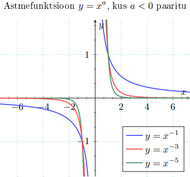

Astmefunktsioonid
Astmefunktsioone on väga palju tüüpe, kuna määramispiirkond, muutmispiirkond ja graafik sõltub a-st.
Paaritu astme funktsioon
f(x) = xa, a > 0 ja a on paaritu
• X = R, Y = R
• paaritu
• üksühene
• pöördfunktsioon: f -1(x) = x1/a

Paarisastme funktsioon
f(x) = xa, a > 0 ja a on paaris
• X = R, Y = (0, ∞)
• paaris
Kui a = m/n, kus n, m ∈ N, siis am/n on m√(an). Juured on murdarvuga astmed.
Paaritu juure funktsioon
f(x) = m√x, m > 0 ja m on paaritu
• X = R, Y = R
• paaritu
• üksühene
• pöördfunktsioon: f -1(x) = xm
Paarisjuure funktsioon
f(x) = m√x, m > 0 ja m on paaris
• X = [0, ∞), Y = [0, ∞)
• üksühene
• pöördfunktsioon: f -1(x) = xm, x ∈ [0, ∞)
Irratsionaalse astme funktsioon
f(x) = xa, a > 0 ja a on irratsionaalne
• X = [0, ∞), Y = [0, ∞)
• üksühene
• pöördfunktsioon: f -1(x) = x1/a
f(x) = x-a on sama, mis f(x) = 1/xa. Hoia jagamist nulliga...
Negatiivse paaritu astme funktsioon
f(x) = xa, a < 0 ja a on paaritu
• X = R \ {0}, Y = R \ {0}
• paaritu
• üksühene
• pöördfunktsioon: f -1(x) = x1/a

Negatiivse Paarisastme funktsioon
f(x) = xa, a < 0 ja a on paaris
• X = R \ {0}, Y = (0, ∞)
• paaris
eelmine teema
järgmine teema